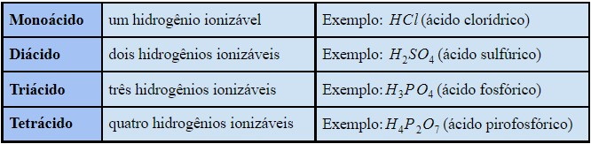
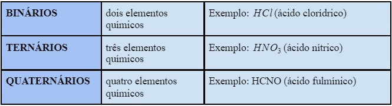
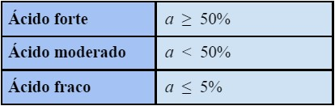
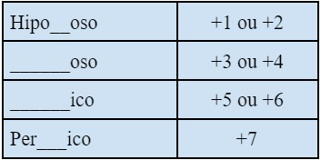
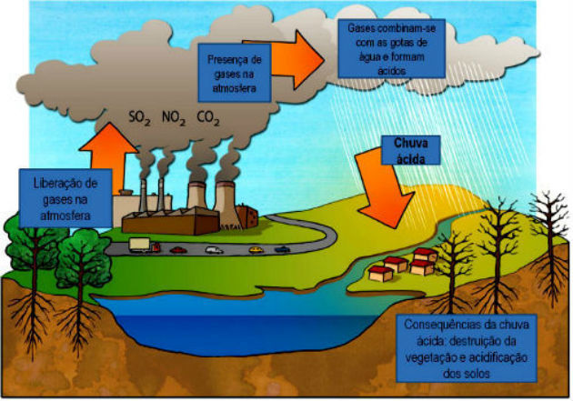
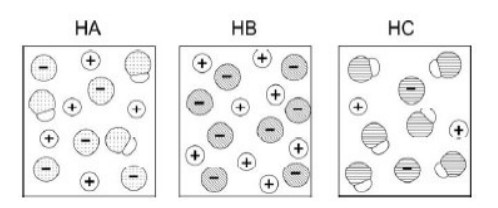

As funções inorgânicas representam os grupos que não possuem carbono como elemento químico central,
e é subdividido em quatro grupos: ácidos, bases, sais e óxidos.
Ácidos
São compostos covalentes, isso significa que compartilham elétrons na sua ligação.
Eles ionizam e formam cargas em água, liberando H3O+ (hidrônio) como único cátion, que também
pode ser representado de forma mais simplificada como H+. Os compostos ácidos possuem algumas características, dentre elas estão:
● Incolor
● Odor forte
● pH inferior a 7
● Estado físico: líquido
● Apenas os ácidos mais fortes têm poder corrosivo, para ele ser forte ele deve ter
alfa maior ou igual à 50%.
● Conduzem eletricidade em solução aquosa
Os ácidos podem ser classificados quanto à presença ou a falta de oxigênio. Se o composto ácido não possuir oxigênio será chamado de hidrácido, que é volátil, ou seja, seu ponto de ebulição é menor que 100°C, o HCl (ácido clorídrico), e o HBr (ácido bromídrico) são exemplos de hidrácidos. Se o composto ácido tiver à presença de oxigênio ele será chamado de oxiácido, seu ponto de ebulição será maior que 100ºC, exceto o HNO3 (ácido nítrico), que é volátil como os hidrácidos, um exemplo de oxiácido é o H2SO4 (ácido sulfúrico).
Os ácidos também podem ser classificados segundo a quantidade de hidrogênios ionizáveis, como mostra na tabela abaixo:

Eles também podem ser classificados de acordo com o número de elementos químicos, como mostra a tabela abaixo:

Podemos determinar o grau com que os ácidos são ionizados em água, para isso é determinada a força ácida que pode ser obtida de mais de uma forma, a fórmula para calcular a força ácida é: a = nº de moléculas ionizadas / nº de moléculas dissolvidas, a classificação da força ácida é dada pelo grau de ionização.

A força ácida nos oxiácidos pode ser determinada de maneira diferente, basta fazer o número de oxigênios menos o número de hidrogênios para saber o grau de ionização, o ácido será muito forte se o valor for igual a 3, se for igual a 2 será forte, será moderado se for igual a 1 e terá força ácida fraco caso o valor seja igual a 0.
a = nº de oxigênios - nº de hidrogênios
O H2CO3 (ácido carbônico) é uma exceção, pois é um ácido instável. Se usarmos a fórmula da força ácida nos oxiácidos, teríamos que o ácido carbônico possui força moderada, contudo, o ácido carbônico por ser um ácido instável, é um ácido do tipo fraco, já que antes de ionizar liberando H+, ele se torna em H2O e CO2, liberando apenas uma pequena quantidade de H+.
Nos hidrácidos a força ácida leva em consideração o tamanho do átomo, por isso quanto maior o tamanho do átomo, maior a sua força ácida.
● Ácidos fortes → HI, HBr, HCl
● Ácidos moderados → HF
● Ácidos fracos → H2S, HCN
A nomenclatura dos hidrácidos é formada pelo radical do nome do elemento mais a terminação ídrico. Exemplos:
● HCl → ácido clorídrico
● HBr → ácido bromídrico
● HI → ácido iodídrico
● HCN → ácido cianídrico
Quando os ácidos são colocados em água forma-se a carga positiva e a negativa, o ânion recebe a nomenclatura segundo o radical do nome do elemento mais o sufixo “eto”. Exemplos:
● Cl- → Cloreto
● Br- → Brometo
● I- → Iodeto
● CN- → Cianeto
A nomenclatura dos oxiácidos pode ser definida de acordo com o NOX do ácido, sendo que o nox do hidrogênio equivale a 1 e o do oxigênio a -2.

Exemplo: H2SO4 → ácido sulfúrico
2 + X + (-2*4) = 0
2 + X - 8 = 0
X = 8 - 2
X = 6 → NOX de S
Exceções:
● H2CO3 → ácido carbônico, e não ácido carbonoso.
● H3BO3 → ácido bórico, e não ácido boroso.
Bases
As bases são substâncias inorgânicas que sofrem dissociação iônica
quando colocadas em água, onde ocorre a liberação de íons: cátions e do ânion
OH-. Os compostos básicos também podem ser chamados de alcalinos. As características das bases são:
● Compostos iônicos.
● Conduz corrente elétrica em solução aquosa.
● PH maior do que 7.
● Formada por um cátion metálico ligado a hidroxila (OH-), com exceção
do hidróxido de amônia (NH4OH).
● Sabor adstringente.
● Reagem com ácidos.
● Possuem maior ponto de fusão se comparado com os ácidos.
● São receptoras de prótons
Exemplos de dissociação:
● 1 NaOH + H2O → 1 Na1+ + 1 OH1-
● 1 Al(OH)3 + H2O → 1 Al3+ + 3 OH1-
● 1 LiOH + H2O → 1 Li1+ + 1 OH1-
● 1 Sr(OH)2 + H2O → 1 Sr2+ + 2 OH1-
● 1 Fe(OH)2 + H2O → 1 Fe2+ + 2 OH1-
● 1 Fe(OH)3 + H2O → 1 Fe3+ + 3 OH1-
Podemos encontrar algumas bases em nosso cotidiano, como o sabão, utilizado para limpeza no dia a dia, já que é produzido por meio da reação do
hidróxido de sódio (NaOH) com gorduras e óleos, o hidróoxido de sódio também é conhecido como soda cáustica, e é utilizado na remoção de sujeira pesada, e na produção de
tecido, papel e produtos de uso doméstico. Temos também o leite de magnésia, contituído de hidróxido de magnésio (Mg(OH)2), que é usado para combater a acidez estomacal.
Temos a amônia, que é utilizada na produção de fertilizantes.
A solubilidade das bases, é algo variável, e depende do elemento formador. Quanto
mais solúvel for a base, maior será a quantidade de cátions e ânions liberados.
a) Base solúvel → elementos da família 1A (metais alcalinos) ligados a OH, e
também o hidróxido de amônia.
b) Base parcialmente solúvel → elementos da família 2A (metais alcalinos
terrosos) ligados a OH.
c) Base praticamente insolúvel → os elementos metálicos que não pertencem
nem a família 1A e nem a família 2A que são ligados a OH.
As bases podem ser classificadas segundo o número de hidroxilas, como mostra a tabela abaixo:
A força das bases é determinada pela família ou grupo que o elemnto se encontra:
● FORTE → Família 1A e 2A, exceto o Be e o Mg.
● FRACA → Be e Mg, e os demais metais, e NH4OH.
A nomenclatura das bases é formada pelo “hidróxido + nome do metal”.
Exemplos:
● NaOH → Hidróxido de sódio
● KOH → Hidróxido de Potássio
● Al(OH)3 → Hidróxido de alumínio
A nomenclatura para os metais que possuem nox variável muda, a
nomenclatura passa a ser formada por “hidróxido + nome do metal + carga do
metal”, ou também avaliando a carga máxima e a carga mínima.
● ICO → carga máxima
● OSO → carga mínima
Exemplos:
● Fe(OH)2 → Hidróxido de Ferro II ou Hidróxido ferroso.
● Fe(OH)3 → Hidróxido de Ferro III ou Hidróxido férrico.
Sais
Os sais são compostos que em água se dissociam, liberando pelo menos um
cátion diferente de H+, e pelo menos um ânion diferente de OH-. Os sais são
formados a partir da reação entre um ácido e uma base, essa reação é chamada de
neutralização, pois forma H2O. Dentre as características dos sais estão:
● Sólidos em temperatura ambiente;
● Possui elevado ponto de fusão e de ebulição;
● Formados a partir de ligações iônicas;
● Conduzem corrente elétrica no estado líquido;
● A maioria dos sais é solúvel em água.
Os sais são muito utilizados no cotidiano, como o cloreto de sódio (NaCl), usado no sal de cozinha, no soro fisiológico, temos também o
carbonato de sódio (Na2CO3), utilizado na produção de vidro e de corantes, no
tratamento de piscinas, na produção de sabão e detergente. Há também o bircabonato de sódio (NaHCO3), utilizado como antiácido, fermento de bolo, em cremes
dentais e extintor de incêndio, estes são alguns exemplos de sais usados no dia a dia.
A nomenclatura dos sais é formada pelo nome do ânion (derivado do ácido) +
nome do cátion (derivado da base).
A nomenclatura do ânion dos sais depende de que tipo de ácido é, se é um hidrácido ou se é um oxiácido.
Nos Hidrácidos → a nomenclatura é formada pelo radical do nome do elemento
mais o sufixo “ídrico”, o ânion recebe a nomenclatura segundo o radical do nome
do elemento mais o sufixo “eto”.
● ÍDRICO → ETO
Nos Oxiácidos → a nomenclatura do ânion dos oxiácidos pode ser definida de acordo com
o NOX do ácido, sendo que o NOX do hidrogênio equivale a 1 e o do oxigênio a -2.
● OSO → ITO
● ICO → ATO
Os sais são obtidos por meio da reação de neutralização, que é a reação entre um ácido e uma base.
➔ Ácido + Base → Água + Sal
Pode ocorrer neutralização parcial, onde apresenta uma classificação diferente.
● HIDROGENOSSAIS OU SAIS ÁCIDOS → no sal resultante encontrasse um H. Exemplo: NaHCO3 (hidrogeno carbonato de sódio ou bicarbonato de sódio).
● HIDROXISSAIS OU SAIS BÁSICOS → No sal resultante encontrasse um OH. Exemplo Mg(OH)Cl (hidróxicloreto de magnésio)
● SAIS DUPLOS OU MISTOS → Sais formados por mais de um cátion ou ânion. Exemplo: NaKSO4 (sulfato de sódio e potássio).
● SAIS HIDRATOS → Sais que possuem água de cristalização. Exemplo: CuSO4.5H2O (sulfato de cobre pentahidratado).
Óxidos
Os óxidos são compostos oxigenados bivalentes, ou seja, são
formados por dois elementos, onde o oxigênio é o elemento mais
eletronegativo.
Os óxidos básicos reagem com água e formam bases, ou em água reage com ácido
formando sal e água. Podem ser chamados de óxidos iônicos. Eles são formados por um metal mais o oxigênio, podemos classifica-los pelo valor
do NOX, se o NOX for menor ou igual a 3 então é um óxido básico. Exemplos de reação:
● Na2O + H2O → 2 NaOH
● CaO + H2O → Ca(OH)2
● FeO + H2O → Fe(OH)2
A nomenclatura dos óxidos básicos depende do tipo de metal que está ligado ao oxigênio, se for
um metal de carga fixa, o nome será dado por óxido + nome do elemento, exemplo: óxido de sódio (Na2O).
Para os metais de carga váriavel, o nome será óxido + nome do elemento + carga, exemplo: óxido de ferro II (FeO).
Os óxidos ácidos reagem com água e formam ácidos, ou reagem com base
formando sal e água. Podem ser chamados de óxidos moleculares. São formados pela ligação entre um ametal mais o
oxigênio, podemos identificá-los pelo valor do NOX, se o NOX for maior ou igual a 4 então é um óxido ácido.
Exemplos de reação:
● SO3 + H2O → H2SO4
● SO2 + H2O → H2SO3
● CO2 + H2O → H2CO3
O nome dos óxidos ácidos é o prefixo que indique a quantidade de oxigênio,
mais óxido, mais o prefixo que indique a quantidade átomos do outro
elemento.
Exemplos:
● CO2 → dióxido de carbono.
● N2O → monóxido de dinitrogênio.
● SO3 → trióxido de enxofre.
Existem outros tipos de óxidos, além dos óxidos básicos e óxidos ácidos, que são:
● ÓXIDOS ANFÓTEROS → Óxidos de duplo caráter, frente a uma base se
comporta como um ácido, frente a um ácido se comporta como uma base.
● ÓXIDOS NEUTROS → Não reage com água, base ou ácido, podendo
reagir com outros tipos de substâncias.
● PERÓXIDOS → Ao reagirem com água ou ácidos diluídos produz água
oxigenada (H2O2).
A chuva ácida é um exemplo de óxidos no cotidiano, ela é provocada pelos óxidos ácidos que vão para o ar e reagem com a
água formando ácidos, as indústrias são as principais responsáveis por esse acontecimento, a imagem abaixo ilustra o que acontece.

Também há o gelo seco, que é um dióxido de carbono no estado
sólido. no estado gasoso o dióxido de carbono é o principal responsável pelo efeito estufa.
Exercícios sobre Funções Inorgânicas
QUESTÃO 1 - (Esal-MG) Uma solução aquosa de H3PO4 é ácida devido à presença de:
a) água
b) hidrogênio
c) fósforo
d) hidrônio
e) fosfato
QUESTÃO 2 - (ITA-SP) Qual dos ácidos a seguir é o menos volátil?
a) HCl
b) HI
c) H2SO3
d) H2SO4
e) CH3CH2COOH
QUESTÃO 3 - (URCA) Observe as fórmulas dos seguintes ácidos
oxigenados:
HNO2(aq); HClO3(aq); H2SO3(aq); H3PO4(aq).
Marque a opção que corresponde aos seus respectivos nomes:
a) Nitroso, clórico, sulfuroso, fosfórico.
b) Nítrico, clorídrico, sulfúrico, fosfórico.
c) Nítrico, hipocloroso, sulfuroso, fosforoso.
d) Nitroso, perclórico, sulfúrico, fosfórico.
e) Nítrico, cloroso, sulfídrico, hipofosforoso.
QUESTÃO 4 - (FUVEST) As figuras a seguir representam, de maneira
simplificada, as soluções aquosas de três ácidos, HA, HB e HC, de
mesmas concentrações. As moléculas de água não estão representadas.

Considerando essas representações, foram feitas as seguintes
afirmações sobre os ácidos:
I. HB é um ácido mais forte do que HA e HC.
II. Uma solução aquosa de HA deve apresentar maior condutibilidade
elétrica do que uma solução aquosa de mesma concentração de HC.
III. Uma solução aquosa de HC deve apresentar pH maior do que uma
solução aquosa de mesma concentração de HB.
Está correto o que se afirma em:
a) I, apenas.
b) I e II, apenas.
c) II e III, apenas.
d) I e III, apenas.
e) I, II e III.
QUESTÃO 5 - (UFPB) Os ácidos são substâncias químicas sempre presentes no
cotidiano do homem. Por exemplo, durante a amamentação, era comum usar-se
água boricada (solução aquosa que contém ácido bórico) para fazer a assepsia do
seio da mãe; para limpezas mais fortes da casa, emprega-se ácido muriático
(solução aquosa de ácido clorídrico); nos refrigerantes, encontra-se o ácido
carbônico; e, no ovo podre, o mau cheiro é devido à presença do ácido sulfídrico.
Esses ácidos podem ser representados, respectivamente, pelas seguintes fórmulas
moleculares:
a) H3BO3, HCl, H2CO2 e H2SO4
b) H2BO3, HCl, H2CO3 e H2S
c) H3BO3, HClO3, H2SO3 e H2CO2
d) H2BO3, HClO4, H2S e H2CO3
e) H3BO3, HCl, H2CO3 e H2S